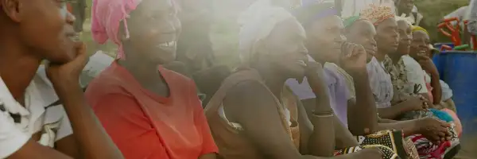
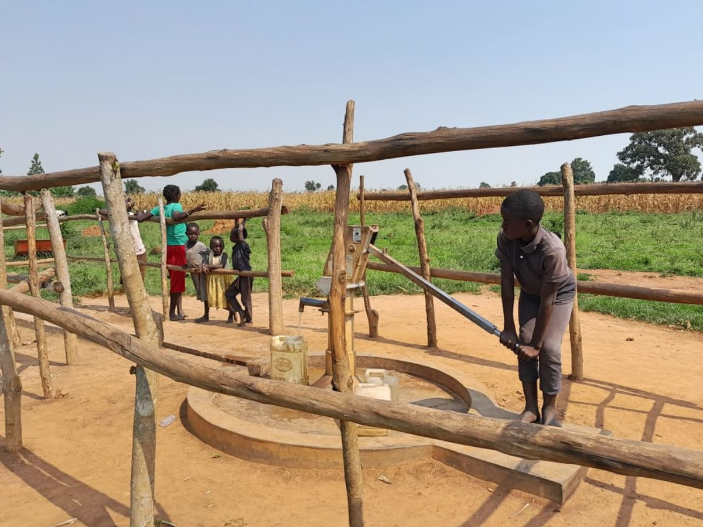
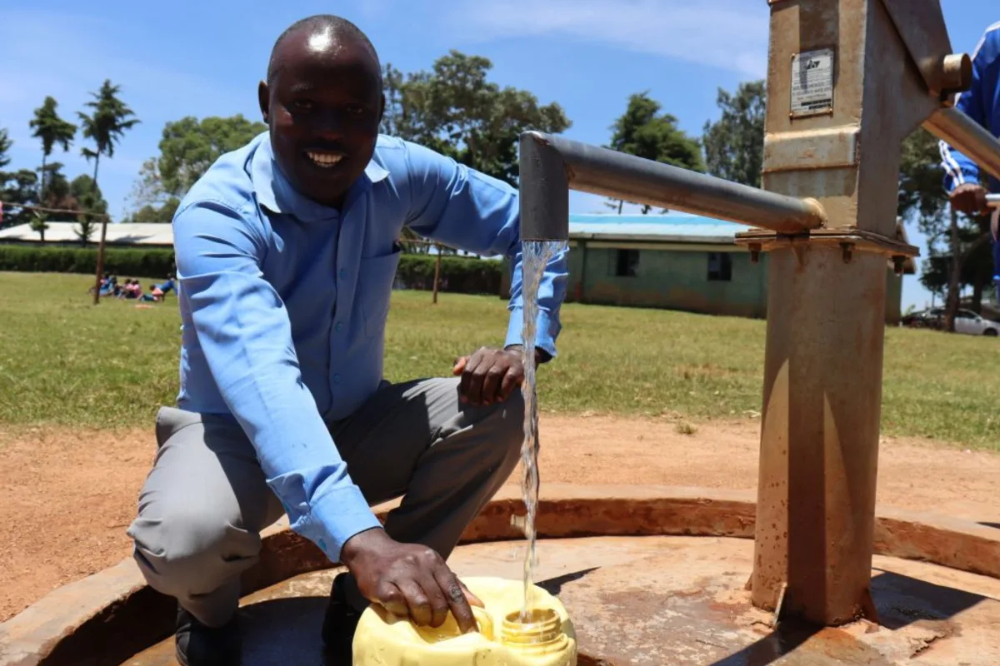
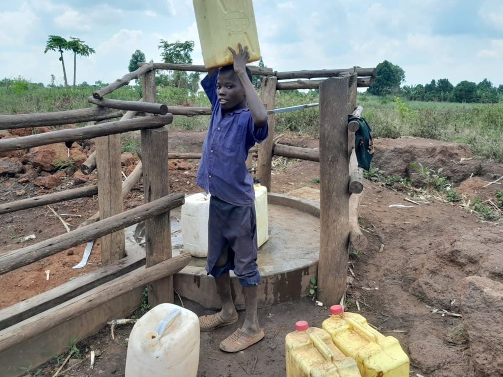
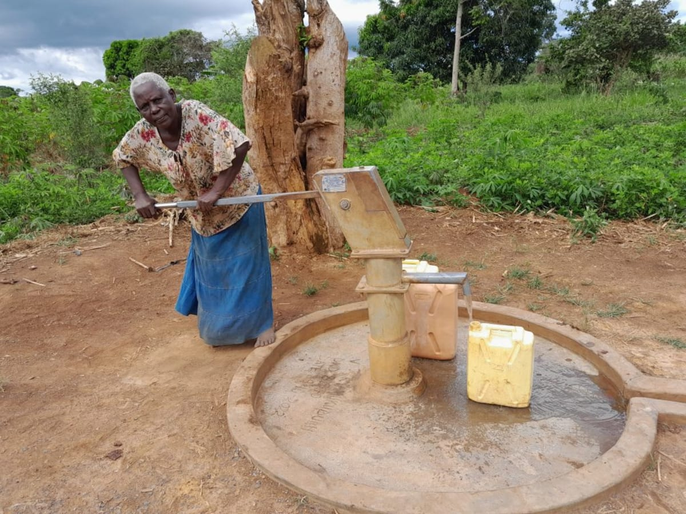

Water doesn't change anything. People Do.
As we work to provide water, we're committed to helping people like you meet your global neighbors and to realize that we all share the same
basic needs. We hope to break down stereotypes and the false distinctions between the so-called winners and losers, rich and poor, the needy
and charitable, by introducing you to the people we serve with the respect and admiration they rightfully deserve.
These are stories of hope,
told in the words of those who carry out this work every day - our friends in the field.

Marvin, 12, recalled what life was like in the Rwebigwara Community before his community's well was implemented last year.
"I used to fetch water from the dam, but the water was not clean. I used to fear going to the dam because there was a man
who fell in and died, and even after that, I had to continue using that same water because I had no ch...

Last year, your gift unlocked the potential for a brighter future for the students and staff of Gisambai Primary School. Since
then, they have had clean, reliable water. Your contribution has made a significant impact. Thank you for making a
difference! Before the Well Installation "The school faced [a] water shortage. We relie...

A year ago, your gift unlocked potential for Godfrey and the rest of the Miramura Community. Our Field Officer Bena Kabiri
asked Godfrey what life was like before his community's well was installed. "Godfrey said that they used to face a challenge
of long distances. They would use bicycles to collect water and sometimes even get [in] accidents o...

Last year, your gift unlocked the potential for a brighter future for Catherine. Since then, she and the Kiyonza-Kyamukudumi
Community of 600 residents have had clean, reliable water. Your contribution has made a significant impact. Thank you
for making a difference! Before the Well Installation Seventy-four-year-old Catherine ...